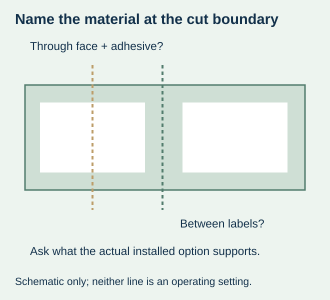
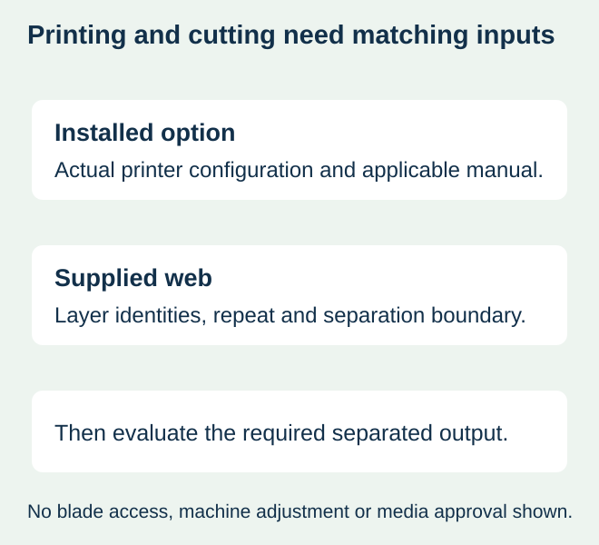

A food packer orders a familiar label size for a printer equipped with a cutter. The proposal shows where the printed image ends but does not identify what material lies at the intended cut. Depending on the actual web and position, the cutter could meet liner alone or the complete face-and-adhesive construction. Those are different consumable requirements.
Identify the installed cutter option and the material at its intended cut boundary before accepting the label proposal. A printer that accepts a roll for printing has not automatically established that its cutter can separate that construction at any position. Use the actual manufacturer instructions and equipment owner’s approved configuration.


Ask what the cut actually crosses
| Web or boundary | Input to identify | What does not answer it |
|---|---|---|
| Between spaced labels on a liner | Actual gap, backing and supported separation position | A white rectangle in the artwork |
| Through a label region | Face, adhesive, liner and any other physical feature in that region | The cutter’s presence alone |
| Linerless continuous stock | The supported linerless material and actual cutter system | Approval for ordinary lined media |
| Tag or receipt media | Actual non-adhesive media and installed-option requirements | An adhesive-label recommendation copied to another supply |
Zebra’s current ZD200 direct-thermal user guide describes its cutter example for label liner and light tag/receipt media and restricts cutting through labels, adhesive or embedded circuitry. That is a model/document-specific boundary. It is not a claim that every label printer has the same cutter or that every other adhesive-cutting system is unsupported.
Keep printed spacing separate from the physical web
A blank region can still contain adhesive stock, and an unprinted margin is not automatically an exposed-liner gap. Ask for a web drawing that identifies the face boundary, backing and any relevant separation feature. The converter and printer owner need to discuss the same supplied construction rather than two different interpretations of a proof.
The butt-cut and gapped-format guide owns the basic format and detection decision. Here the narrower question is which physical material the installed cutting option will meet. A gap used for detection should not be treated as a complete cut-position approval without the equipment requirement.


Confirm the option, not only the model family
Record the actual printer configuration and installed media-handling option. A shared model-family name or a reseller image is not enough to identify a cutter. Ask the equipment owner which current manufacturer document applies and which supplied media and output arrangement are supported.
Do not copy another machine’s minimum spacing, thickness or cutting setting into the order. This guide provides no operating adjustment, blade-access, cleaning or modification procedure. If there is a jam or unresolved cutting problem, use the owner’s approved support route rather than turn a consumable-selection article into maintenance instructions.
Use a sample that represents the output boundary
Once the combination is supported, agree a representative output evaluation with the printer owner and relevant suppliers. Use the proposed material, repeat layout, actual template and required separation. Keep content completeness, physical separation and subsequent package use as separate observations.
For a hypothetical food-date label, a printed field may be correct and readable while the separated piece contains part of an adjacent label. Another output may separate cleanly but carry an unsuitable value. The responsible operation must approve each relevant requirement; a clean cut is not approval of the date, barcode or food-pack material.
If the proposal uses folded input, its feed and fold relationship still need confirmation under the fanfold interface guide. If it uses linerless stock, evaluate that exact system using the linerless workflow guide. Do not use success with one supply to qualify a physically different cutting job.
Compare supported ways to obtain the required pieces
Where the desired media/cutter combination is unsupported or unknown, ask for a confirmed alternative supply format or a different approved output arrangement. Compare the complete printed-label requirement and actual work. No device purchase, retrofit or universal conversion service is implied here.
Record the accepted media reference, installed option, actual cut boundary and relevant sample evidence with the order. A later change in backing, face or repeat layout should be reviewed against that record. The useful purchasing result is a supported consumable and output, not an assumption that any roll becomes cutter-compatible because it prints successfully.
Discuss the unresolved label requirement
Provide the exact printer and cutter option, proposed media construction, complete repeat drawing and intended separation position. State the required printed output and food-pack use, with quantities, before asking which media supply can be supported. Review the food-label product scope and prepare a label specification inquiry. The contact page opens an email draft and lists email or WhatsApp for attachments. Supply, proof options, testing, pricing and timing require project confirmation.